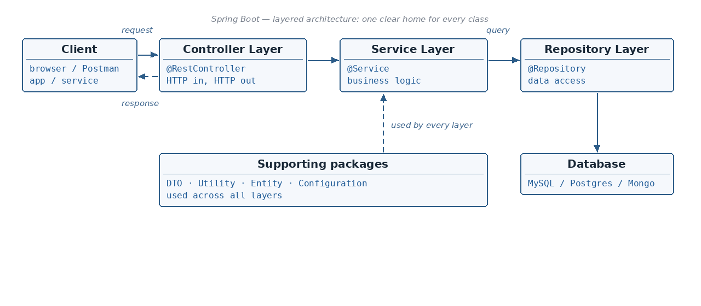

Are the stereotype annotations just labels?
☕ 5 min read · 🎬 Video walkthrough · 📊 UML diagram · 💻 Runnable code
⚡ In a nutshell — How a Spring Boot application is organized into Controller, Service and Repository layers · What the supporting packages do: DTO, Utility, Entity, Configuration · Which annotation marks each layer · A complete request flow — one small class per layer
In a layered architecture every class has one clear home. A request enters at the top, travels down through the layers, touches the database at the bottom, and the response travels back up the same path.

Added: each layer has its own annotation —
@RestControllerfor the controller layer,@Servicefor the service layer,@Repositoryfor the repository layer, and@Configurationfor configuration classes. All of them are specializations of@Component, so component scanning picks them up and registers them as beans automatically.Added: classic interview question — "is there any real difference between
@Component,@Service,@Repositoryand@Controller?" Mostly they differ in intent (readability + a hook for tools/AOP pointcuts), but two have real behavior: -@Repositoryadds exception translation: Spring wraps low-level persistence exceptions (JDBCSQLException, Hibernate exceptions) into its unified, uncheckedDataAccessExceptionhierarchy. Your service layer catches one consistent family of exceptions no matter which DB technology sits below. -@Controller/@RestControllerare what Spring MVC scans for@RequestMappinghandler methods — a plain@Componentwith@GetMappingwill not receive requests. -@Serviceadds no extra behavior today — it marks the business layer and keeps pointcuts/architecture rules expressible ("all beans in@Serviceclasses").
Added: the benefits worth naming in an interview: - Separation of concerns — HTTP details, business rules and SQL never mix in one class. - Testability — each layer is unit-tested by mocking the layer directly below it (mock
UserRepository, testUserServicewith plain JUnit + Mockito, no database needed). - Replaceability — swap MySQL for Mongo by changing the repository layer only; the service and controller do not change. - Loose coupling — layers depend on interfaces, wired by dependency injection (Topic 06), nevernew-ed by hand.
// Testability in practice: service tested WITHOUT database or web server.
@ExtendWith(MockitoExtension.class)
class UserServiceTest {
@Mock UserRepository repo; // fake the layer below
@InjectMocks UserService service; // real class under test
@Test
void returnsDtoWhenUserExists() {
when(repo.findById(1L)).thenReturn(Optional.of(new User(1L, "Asha", "a@x.io")));
UserDto dto = service.getUser(1L);
assertEquals("Asha", dto.getName());
}
}
These sit beside the three layers and are used across all of them:
Good to know: keep DTOs and Entities separate. The entity mirrors your table — it may hold columns (passwords, internal ids, audit fields) that must never reach the client. The DTO is the public contract of your API; the entity is the private storage shape. A utility/mapper converts between the two.
The same GET /users/1 request, followed through the code — top to bottom.
// controller/UserController.java — HTTP in, HTTP out. No business logic here.
@RestController
@RequestMapping("/users")
public class UserController {
private final UserService service;
public UserController(UserService service) { this.service = service; }
@GetMapping("/{id}")
public UserDto getUser(@PathVariable Long id) {
return service.getUser(id); // delegate to the service layer
}
}
// service/UserService.java — business logic lives here.
@Service
public class UserService {
private final UserRepository repo;
public UserService(UserRepository repo) { this.repo = repo; }
public UserDto getUser(Long id) {
User user = repo.findById(id)
.orElseThrow(() -> new RuntimeException("User not found: " + id));
return MapperUtil.toDto(user); // Utility does the Entity -> DTO mapping
}
}
// repository/UserRepository.java — data access only. Spring writes the SQL.
@Repository
public interface UserRepository extends JpaRepository<User, Long> { }
// entity/User.java — direct representation of the "users" table.
@Entity
@Table(name = "users")
public class User {
@Id
@GeneratedValue(strategy = GenerationType.IDENTITY)
private Long id;
private String name;
private String email;
// getters & setters
}
// dto/UserDto.java — only what the client is allowed to see.
public class UserDto {
private String name;
private String email;
// getters & setters
}
// util/MapperUtil.java — common code lives in ONE place.
public class MapperUtil {
public static UserDto toDto(User user) {
UserDto dto = new UserDto();
dto.setName(user.getName());
dto.setEmail(user.getEmail());
return dto;
}
}
// config/AppConfig.java — shared beans & settings for the whole application.
@Configuration
public class AppConfig {
@Bean
public ObjectMapper objectMapper() {
return new ObjectMapper();
}
}
Added: request flow example — client calls
GET /users/1→ Controller receives it and extractsid = 1→ Service applies the business rules → Repository runsSELECT * FROM users WHERE id = 1→ the Entity comes back from the DB → the Utility maps Entity → Response DTO → the controller returns the DTO, serialized as JSON, to the Client.
user/ (controller, service, repo) keeps a feature's blast radius in one place.@Valid) at the controller edge; business rules inside services.@RestController, @Service, @Repository, @Configuration — all specializations of @Component.@Repository adds exception translation to DataAccessException; @Controller/@RestController enable request-mapping detection; @Service marks intent.Next topic: Maven — the project management tool: pom.xml, the build lifecycle and repositories.
👏 Found this useful? Give it a few claps so more developers discover it, and follow for the whole series — every article ships with a UML diagram, runnable code, a narrated video, and a companion PDF. Happy building! 🚀